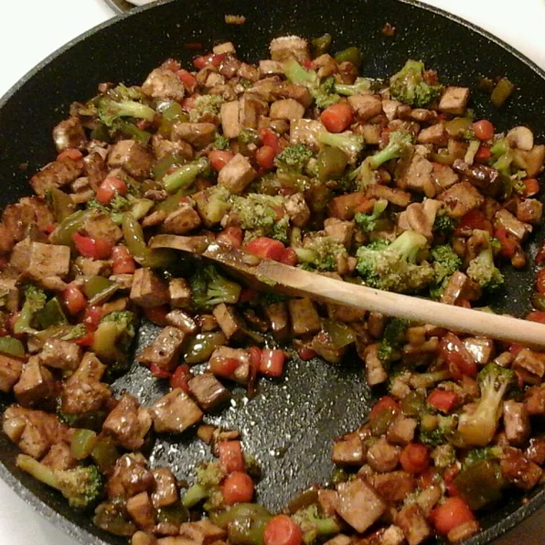

Tofu Stir Fry

Description
I like to serve this broccoli and tofu stir fry over white rice. If you don't have cashews, pecans or almonds will work as well.
Ingredients
- 1 tablespoon peanut oil
- 4 cloves garlic, minced
- 1 red bell pepper, seeded and sliced into strips
- ⅓ cup chicken broth
- 3 tablespoons soy sauce
- 1 tablespoon dry sherry
- 2 teaspoons cornstarch
- 8 ounces extra firm tofu, diced
- 2 tablespoons cashew pieces
Steps
- Heat peanut oil in a wok or large skillet over high heat. Stir in garlic and cook for a few seconds until it begins to brown. Add the bell pepper and broccoli; cook until the pepper begins to brown and soften, about 5 minutes.
- Stir together the chicken broth, soy sauce, sherry, and cornstarch until dissolved. Pour the sauce into the wok and bring to a boil. Stir in the tofu, and cook until hot, about 1 minute. Garnish with cashew pieces to serve.